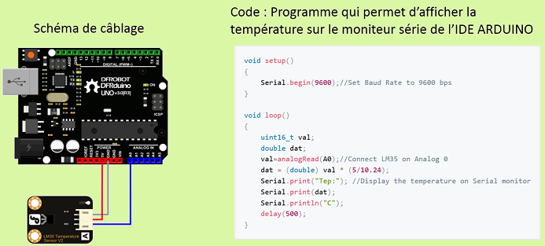
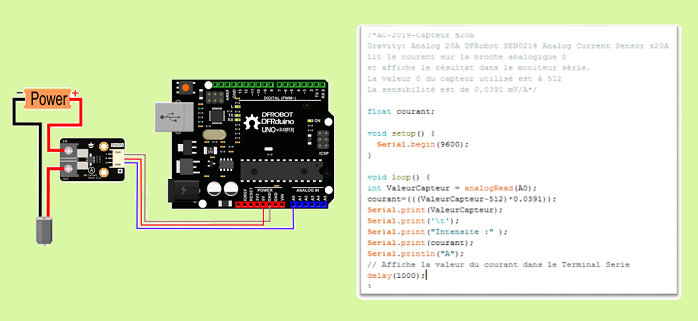
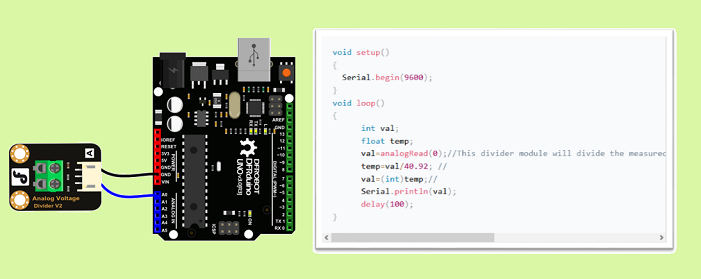
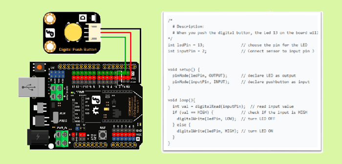
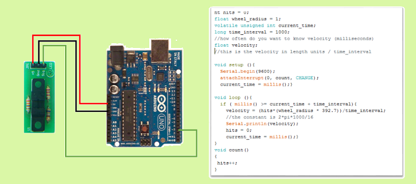

Ce capteur de température linéaire Arduino est basé sur le composant LM35. La tension de sortie est proportionnelle à la température. L’étendue de mesure est de 0°C à 100°C. La sensibilité est de 10 mV /°C.

NoticeCe capteur de courant Gravity Analog est basé sur le principe de détection de courant par effet Hall. Il peut être utilisé pour la mesure d'intensité alternative ou continue.

NoticeCe capteur renvoie une valeur analogique (tension) comprise entre 0 et 5 Vcc. La tension maximale mesurable est de 25 Vcc. Ce capteur est basé sur un pont diviseur de tension.

NoticeCes capteurs permettront de stopper le travelling. Seul l’utilisateur pourra commander le démarrage dans le sens inverse. Cette commande de démarrage devra être assurée par un capteur TOR sur l’IHM.

NoticeCe potentiomètre permet de donner la consigne de vitesse, elle sera affichée. Cette valeur nous permettra de corréler les résultats de vitesse avec la tension aux bornes du moteur et la vitesse de rotation effective donnée par le codeur. Le potentiomètre utilisé est un potentiomètre 10 tours.

Ce capteur est un encodeur rotatif muni d'un disque à fentes et d'une carte équipée du capteur. Il est utilisé pour convertir les données du mouvement rotatif en une série d'impulsions électriques. Sur la carte il y a un DEL qui s'allume en même temps que le signal.

NoticeLorsqu’on utilise une ARDUINO UNO il est primordial de comprendre que cette carte microcontrôleur ne peut distribuer une quantité d’ampères infinie. La documentation relative à la carte montre que le courant total « i » demandé à la carte ne peut excéder 200 mA maxi et que chaque sortie « in » ne supporte pas de courant supérieur à 40 mA. Ces caractéristiques montrent qu’il est nécessaire d’utiliser une carte supplémentaire capable de distribuer un courant supérieur ou relayer les sorties. De plus la tension est limitée à 5 Vcc. Soit une puissance maxi de 1 watt.
Le driver OSEPP MTD01 est un contrôleur à double pont en H (Imax 2A). Il peut supporter un courant de 2 A. Il est basé sur le composant L298N qui permet la commande d’un moteur pas à pas quatre fils ou deux moteurs CC. C’est une commande MLI (PWM) pilotée par un microprocesseur et un double pont en pont en H. Le dispositif MLI (Modulation de largeur d’impulsion) est une alimentation intermittente à haute fréquence du moteur (environ 20 kHz). Un pont en H piloté par des transistors de puissance permet l’usage du MCC dans les deux sens. Il est équipé de diodes (roue libre) afin de dissiper les courants induits lors de l’arrêt de l’alimentation du MCC.
Cette carte permet de piloter des moteurs. Le driver permet d'agir sur :
Les écrans LCD standards nécessitent plusieurs E / S sur le contrôleur. Cela restreint les autres fonctions du contrôleur. L’écran LCD2004 est muni d’un bus I2C . Il s'agit d'un bus série (Bus série, 8 bits, bidirectionnel) haute performance qui n'a que deux lignes de signal bidirectionnelles, la ligne de données série (SDA) et la ligne d'horloge série (SCL). Il est basé sur le principe « maitre esclave ».
Ce protocole [I2C] permet la communication entre des composants électronique très divers grâce à seulement trois fils, mais il nécessite l'intégration d'un "protocole de communication" dans le programme. Ce protocole se présente sous la forme d'une "bibliothèque" (libraries) qu'il faut intégrer au code ARDUINO pour permettre la communication.

Ce module suiveur de ligne est basé sur un réflecteur optique et un amplificateur. Le seuil de déclenchement du signal digital est réglable via un potentiomètre ajustable.